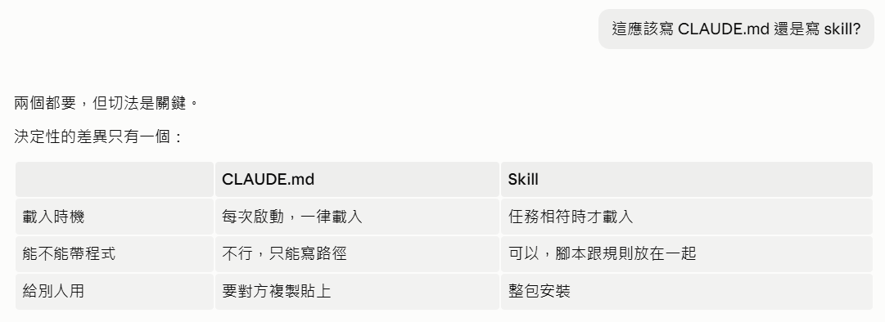
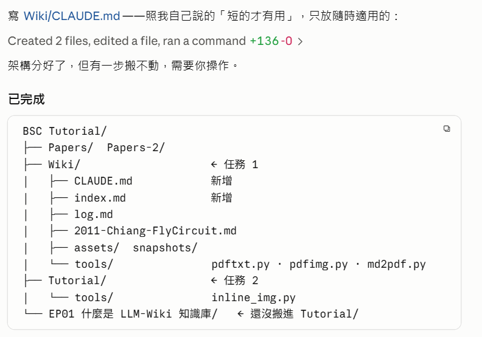
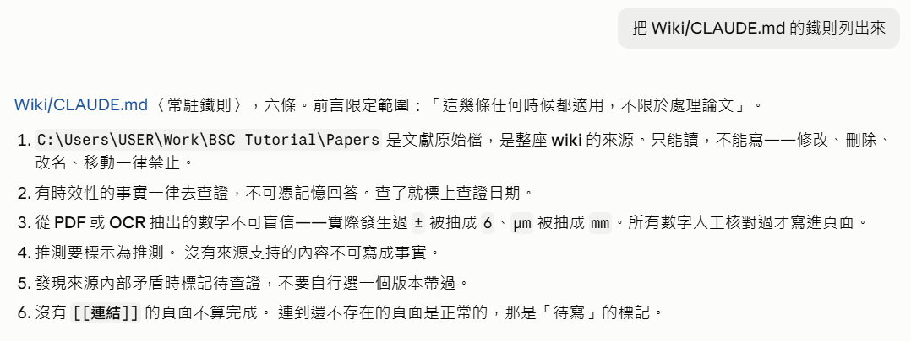
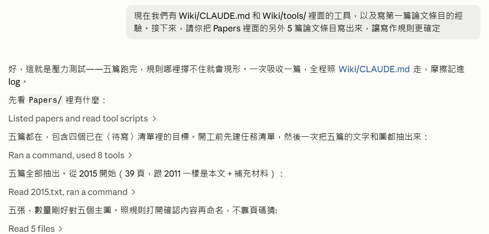
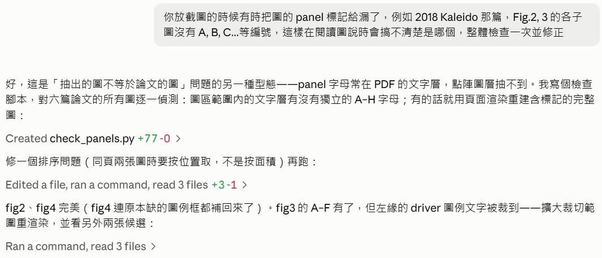
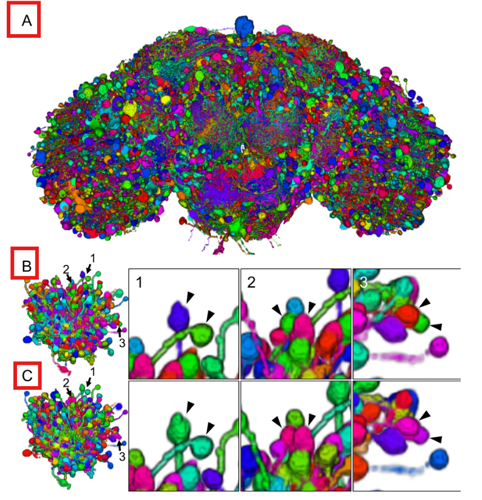
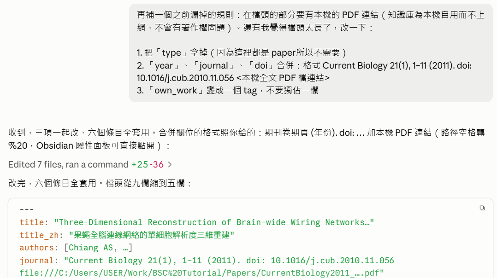
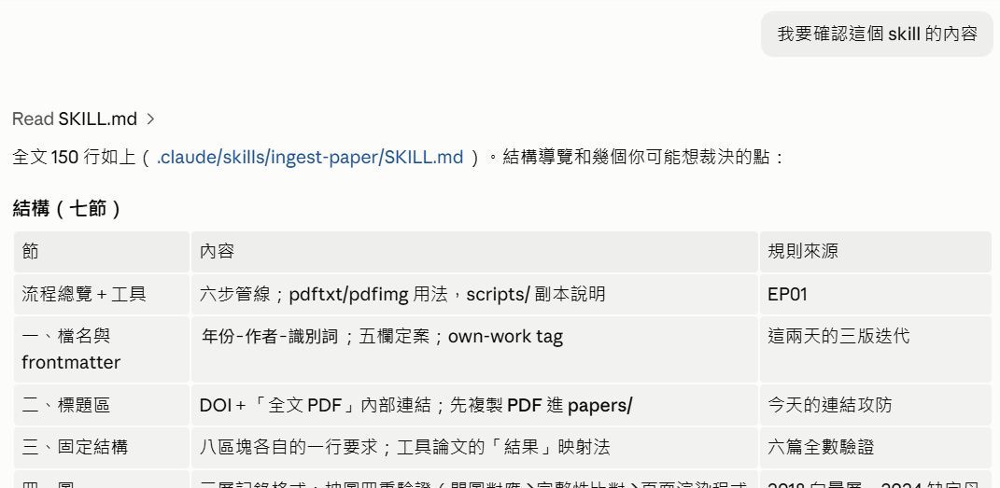

Writing the First Rulebook
The previous episode built the knowledge base but deliberately left the rulebook unwritten.
This episode fills that gap: what CLAUDE.md actually is, and how to build one out of
the friction the work has accumulated — with every rule labeled with where it came from.
 Play the tutorial video · 12 min 39 s · watch on YouTube ↗
Play the tutorial video · 12 min 39 s · watch on YouTube ↗
How to read this page
What CLAUDE.md Actually Is
Explain what “CLAUDE.md” is, what role it plays and how it actually works
Original (zh-TW)說明「CLAUDE.md」是什麼，其角色與實際運作的方式
- Started with what it fundamentally is: a plain-text markdown file. No schema, no syntax checking, no reserved words — you can write it in Notepad.
- Pointed out that the only special thing about it is the filename — at startup Claude Code looks for a file with that name, reads the contents in, and treats them as standing instructions for the session.
- Listed the three places it can live and when each is loaded, and explained that they
stack: the global
~/.claude/CLAUDE.mdand the one in the project root are loaded at every startup, while one in a subdirectory is loaded only when a file in that folder is read.

English transcript · what the screenshot saysclick to collapse
Explain what “CLAUDE.md” is, its role and how it actually works
What it is
CLAUDE.md is just a plain-text markdown file. There is nothing special about the format — no schema, no syntax checking, no reserved words. You could write it in Notepad.
The only special thing is the filename. When Claude Code starts up it goes looking for a file with that name, reads the contents in, and treats them as standing instructions for this working session.
When it loads, and how it stacks
Three locations, and they stack:
| Location | Scope | When it loads |
|---|---|---|
~/.claude/CLAUDE.md | You personally, all projects | Every startup |
Project root CLAUDE.md | This project | Every startup |
Subdirectory CLAUDE.md | That directory | Only loaded when a file in that folder is read |
How CLAUDE.md actually worksclick to expand
It is context, not code
This is the most commonly misunderstood point. The contents of CLAUDE.md are not
“executed” — they are pasted into the conversation. Technically the text is placed
into the context sent to the model, with exactly the effect of you pasting it in by hand at the start
of every session.
Three consequences all follow from this:
- It has no force. Nothing intercepts an action that breaks a rule. A hard rule saying “raw sources are read-only” is not write protection; it is a sentence. Its power comes from the model reading it and deciding to comply — which is why a rule has to be concrete, checkable and given a reason. A vague rule is not a weak constraint, it is no constraint at all.
- Every request pays for it. A three-hundred-line rulebook means every turn of the conversation pays a three-hundred-line tax up front — you pay it to ask a small question, you pay it to fix a typo. That, and not aesthetics, is the real reason “only the short one works”.
- Rules dilute one another. Attention in the context is finite. Each of twenty rules carries more weight than any one of a hundred.
Editing it mid-session does not take effect immediately
The rulebook is read in when the session starts. If you edit it in the middle of a conversation, the copy already loaded is not updated — the running conversation still sees the old one. The reliable way to make an edit take effect is to start a new session.
It is not memory
The same text is loaded every time. It does not grow a new rule because you corrected something last time — if it grows, it is because you or the Agent wrote the rule in.
The analogy from the previous episode still holds: think of the Agent as an employee who loses all memory at the start of every shift. The rulebook is the notice on the wall, not the employee's memory. Whatever is not on the wall, he will not know tomorrow.
The equivalent filename in other tools
Same concept, different filename, identical logic: Claude Code uses CLAUDE.md,
OpenAI Codex uses AGENTS.md, Cursor uses .cursorrules.
Lay the Rules Out, Each with Its Origin
List the rules for writing a wiki entry (the md file that corresponds to one paper PDF)
Original (zh-TW)列出寫 wiki 條目（對應一篇論文 PDF 的 md 檔）的規則
- Set the tone in its opening line: “All of these rules come from this build; every one of them has an origin.”
- Then did the crucial thing — it gave every rule an origin column, marking it as “from you”, “from a failure”, “convention” or “precaution”.
- The first group was “A. Files and naming”, three rules with three different origins.
- From youFrom an explicit instruction by the user. It holds because you asked for it.
- From a failureFrom something that went wrong during the build. It holds because not doing it has already caused trouble.
- ConventionStandard practice in the field or the tool. Not binding, but following it saves work.
- PrecautionA risk worked out in advance. It has not happened yet, but it is foreseeable.

p08_x127_1362x1386.jpeg is
completely unreadable.English transcript · what the screenshot saysclick to collapse
List the rules for writing a wiki entry (the md file that corresponds to one paper PDF)
Under the prompt bubble: the copy / retry / branch icons and 3 hours ago.
All of these rules come out of this build; every one of them has a source. I mark whether it was “something you gave me” or “something we hit the hard way”.
A. Files and naming
| Rule | Where it came from |
|---|---|
Filenames use year-first author-identifier.md, e.g. 2011-Chiang-FlyCircuit.md | Convention |
| Don't use the date as the primary key — several papers get handled on the same day | Precaution |
Figure files go in assets/<identifier>/, named fig1…figN | Hit the hard way (the original filename p08_x127_1362x1386.jpeg is completely unreadable) |
Frontmatter and Page Structure
There is no new prompt in this step; it continues the previous one — the same list, further down.
- Listed the nine required fields under “B. Frontmatter”, with the constraint noted beside each:
titlemay not be omitted or abbreviated;own_workis added only for your own papers. - Added a reason about timing: “Add frontmatter on day one. Decide you want it after two hundred pages have piled up and you have to go back and add it two hundred times.”
- Then “C. Page structure (fixed order)”, nine items — from the full English title as the H1 down to Related pages at the end.
- Item 3 came with a note: “Why it matters” is about the entry's relationship to the other pages in the knowledge base, not its standing in the field.

English transcript · what the screenshot saysclick to collapse
B. Required frontmatter
type: paper
title: "full English title" # no omitting, no abbreviating
title_zh: "Chinese title"
authors: [...]
year: 2011
journal: "Current Biology 21(1), 1-11"
doi: 10.1016/j.cub.2010.11.056
own_work: true # only for your own papers
tags: [...]Add the frontmatter on day one. If you only want it once two hundred pages have piled up, you have to go back and fill it in two hundred times.
C. Page structure (fixed order)
- H1 = the full English title; below it the Chinese translation, authors, journal, DOI link
- One-sentence conclusion
- Why it matters — its relationship to the other pages in the knowledge base, not its standing in the field
- Abstract — original text + Chinese translation
- General-audience article — high-school level, about 2,000 characters
- Technical article — 3,000 characters or more, six sections: Overview / Methods / Results / Discussion / Problems and limitations / Future work
- Open questions and follow-ups
- Figure sources — copyright note
- Related pages
… (cut off)
Writing, Figures and Tables
- Five rules under “D. Writing”, two of them explicitly tagged with an origin — From youthe general-audience article carries no figures and must be readable from plain text alone; From a failurethe same figure needs a different interpretation for each reader level, and the two must not share one copied paragraph.
- Seven rules under “E. Figures and tables”, covering where figures go, how captions are translated, what an interpretation must do, and how tables, formulas and flowcharts are handled.
- Several rules carry their reason inside the rule: “translate captions item by item in full, never summarize — the caption is the way back in when you search later”; “tables are always converted to markdown, never screenshotted — comparing numbers across papers depends on it”.
- The demand on interpretation was severe: “an interpretation must say something the paper does not; otherwise it just repeats the caption.”

English transcript · what the screenshot saysclick to collapse
D. Writing
- General-audience article: plain and natural; no adjectives or exclamations unless they are needed; analogies may be used to aid understanding
- No figures in the general-audience article — it must be understandable from the plain text alone ← your instruction this time
- The technical article is written to the structure of a formal paper
- Keep technical terms in English (LPU, neuropil, affine); don't force a translation
- The same figure needs a different reading at each reader level; you can't copy the same passage into both ← hit the hard way
E. Figures and tables
- All figures go in the technical article, in the natural Figure 1→N order
- Three layers per figure: the original image + a complete translation of the caption + a further interpretation
- Translate the caption in full, sentence by sentence (including every A/B/C sub-item); no summarizing — the caption is the entry point for later retrieval
- The interpretation has to say something the original text does not, otherwise it just repeats the caption
- Always convert tables to markdown, never screenshot them — this is exactly what cross-paper comparison of the numbers relies on
- Use LaTeX for formulas
- Draw flowcharts and the like yourself in mermaid; don't screenshot the original
The Key Question: CLAUDE.md or a Skill
The list is finished, a little over twenty rules. The next move decides the shape of the whole document.
You could simply say “write them into CLAUDE.md” — the natural reaction, since writing the rulebook is what this episode is for. But the question asked here is a different one.
Should this go in CLAUDE.md or in a skill?
Original (zh-TW)這應該寫 CLAUDE.md 還是寫 skill?
- Gave the conclusion first: “Both — but where you cut the line between them is what matters.”
- Then reduced the difference to three items, saying plainly that “there is only one decisive difference” — when it loads.
- The other two are whether it can carry programs, and how you hand it to someone else.
| CLAUDE.md | Skill | |
|---|---|---|
| When it loads | Every startup, always | Only when the task matches |
| Can it carry programs | No, only a path to one | Yes, the scripts sit with the rules |
| Handing it to others | They copy and paste | Installed as one package |

English transcript · what the screenshot saysclick to collapse
Should this go in CLAUDE.md or in a skill?
Both, but where you cut the line is what matters.
There is only one decisive difference:
| CLAUDE.md | Skill | |
|---|---|---|
| When it loads | Every startup, always loaded | Loaded only when the task matches |
| Can it carry code? | No, you can only write a path | Yes, the scripts sit together with the rules |
| Giving it to someone else | They have to copy and paste it | Installs as one package |
Thirty Selected Lines into CLAUDE.md
- Redistributed the twenty-odd rules by when they load, into two piles.
CLAUDE.md(about 30 lines) — the standing constitution: who owns which of the three layers, the directory structure, thelog.mdformat and “record the friction, not just what was done”, language and style, always look up facts that go stale, and never trust extracted numbers blindly.- The
ingest-paperskill — loaded only when it is needed: the full nine-block structure, the length and target reader of the general-audience and technical articles, the three-layer record for each figure and the item-by-item full translation of captions, tables converted to markdown and formulas in LaTeX, the definition-of-done checklist, and copies of the two scriptspdftxt.pyandpdfimg.py. - Explained, unprompted, one arrangement that looks inconsistent:
“I deliberately put the last two in
CLAUDE.mdrather than in the skill — because they are traps you can fall into at any time, not only when handling papers.”

English transcript · what the screenshot saysclick to collapse
How to split them
CLAUDE.md (about 30 lines) — the standing constitution
- The responsibilities of the three layers:
raw/read-only,wiki/entirely the AI's, schema co-evolves - Directory structure
- The format of
log.md, plus “record the friction, not just what was done” - Language and style: mainly Chinese, technical terms kept in English
- Anything time-sensitive is always looked up, never answered from memory
- Never blindly trust the numbers that come out of extraction
I put the last two in CLAUDE.md rather than in the skill on purpose — they are traps you can step into at any moment, not only when handling papers.
Skill ingest-paper — loaded only when it is needed
- The full structure of the nine blocks
- Length and target reader for the general-audience article / technical article
- The three-layer record for figures; item-by-item full translation of the captions
- Tables converted to markdown, LaTeX for formulas, mermaid for flowcharts
- The definition-of-done checklist
- Ships with
pdftxt.pyandpdfimg.py
Skills and CLAUDE.md, and Why There Is No Hurry
- In EP01 the Agent wrote two utility programs,
pdftxt.pyandpdfimg.py, and left them in a temporary directory — they disappear on reboot. - If
CLAUDE.mdsaid “usepdftxt.pyto do such and such…”, the rule would be useless the moment those temporary files were gone. Packaging the two programs into the skill as well makes sure they can still be reused later. - Its recommendation: write
CLAUDE.mdnow, because those 30 lines are all general rules and unlikely to be wrong; leave the skill until a few more paper entries have been written and the rules are firmer.

English transcript · what the screenshot saysclick to collapse
Why the skill side is the decisive one
pdftxt.py and pdfimg.py are lying in a temp directory right now; they will be gone at the next reboot.
All CLAUDE.md can do is write “please use pdftxt.py” and then pray the file is still there. A skill packs the scripts and the rules into the same folder, so they travel together. That matters especially for your course material — what the student gets is a thing that runs, not a description they have to rebuild themselves.
One reminder
This set of rules has only been run on one paper.
Karpathy's line that “the schema has to co-evolve” means the rules should grow out of repeated friction, not be generalised from a single success. My advice:
- Write CLAUDE.md now — those 30 lines are all general rules, they are unlikely to be wrong
- Wait another two or three papers for the skill — especially until you ingest a paper that is “not your own, not Drosophila, not connectomics”. LICONN or FFN in Papers-2 would be a good stress test; they will force out the assumptions in the current set of rules
The rule most likely to give trouble is “translate every caption item in full”. Captions in methods papers sometimes run half a page, and translating all of it may not be worth it. Deal with that when we hit it.
Write It, and Say What Could Not Be Done
Only once the classification was settled did the writing start. There is no new prompt on this screen — only execution and a report.
- Wrote
Wiki/CLAUDE.md, stating what it wrote to: “Following my own line that only the short one works, I have kept it to what applies at any time.” - Took care of something more basic along the way — it split the project in two:
Wiki/is task one (build the knowledge base),Tutorial/is task two (make the teaching material), each with its own rulebook. Having both jobs in one folder was what made “which of the two shouldCLAUDE.mdbe about” impossible to decide. - Filed the scattered scripts:
pdftxt.py,pdfimg.pyandmd2pdf.pyintoWiki/tools/,inline_img.pyintoTutorial/tools/. That settles the “gone at the next reboot” problem raised in the previous step. - 136 lines changed in all (
Created 2 files, edited a file, ran a command). - Reported one step it could not do: the EP01 folder could not be moved into
Tutorial/and needs a person. The folder is the current session's own working directory, locked by the process, and Windows will not move it — an environment limit, not a capability limit.

← not yet moved into Tutorial/, is its own annotation.English transcript · what the screenshot saysclick to collapse
Writing Wiki/CLAUDE.md — following my own line that “only a short one is any use”, it holds only what applies at all times:
Created 2 files, edited a file, ran a command +136 -0 ›
The structure is now split up, but there is one step I can't move — it needs you to do it.
Done
BSC Tutorial/
├── Papers/ Papers-2/
├── Wiki/ ← task 1
│ ├── CLAUDE.md new
│ ├── index.md new
│ ├── log.md
│ ├── 2011-Chiang-FlyCircuit.md
│ ├── assets/ snapshots/
│ └── tools/ pdftxt.py · pdfimg.py · md2pdf.py
├── Tutorial/ ← task 2
│ └── tools/ inline_img.py
└── EP01 什麼是 LLM-Wiki 知識庫/ ← not moved into Tutorial/ yetPrograms filed in this step
- Wiki/tools/
pdftxt.py(PDF to UTF-8 text) ·pdfimg.py(extract embedded images) ·md2pdf.py(markdown to a PDF snapshot)- Tutorial/tools/
inline_img.py(inline images as base64 to make a single-file web page)
Acceptance: List the Hard Rules
List the hard rules in Wiki/CLAUDE.md
Original (zh-TW)把 Wiki/CLAUDE.md 的鐵則列出來
- Listed six hard rules, and stated their scope up front: “these apply at any time, not only when handling papers” — that qualifier is the trace left by the sorting criterion from step 06.
- Every rule kept its origin. Rule 3 writes the scene of the failure straight into the rule:
“this actually happened —
±came out as6,µmcame out asmm”.

English transcript · what the screenshot saysclick to collapse
List the hard rules in Wiki/CLAUDE.md
Wiki/CLAUDE.md ⟨Standing hard rules⟩, six of them. The preamble limits the scope: “these apply at any time, not only when handling papers”.
C:\Users\USER\Work\BSC Tutorial\Papersholds the original literature files and is the source for the whole wiki. Read only, never write — modifying, deleting, renaming and moving are all forbidden.- Anything time-sensitive is always verified, never answered from memory. Once checked, mark the date it was checked.
- Numbers extracted from a PDF or by OCR must not be trusted blindly — it has actually happened that ± was extracted as 6 and µm as mm. Every number is checked by hand before it goes into a page.
- Speculation must be marked as speculation. Anything with no source behind it must not be written as fact.
- When you find the sources contradicting each other, mark it as to-be-verified; don't pick one version yourself and gloss over it.
- A page with no
[[links]]does not count as finished. Linking to a page that doesn't exist yet is normal — that is the marker for “to be written”.
Stress-Test the Rules on Five Papers
The rulebook is written, but only one paper has tested it. The next prompt puts the rules on trial.
We now have Wiki/CLAUDE.md, the tools in Wiki/tools/, and the experience of writing the first paper entry. Next, please write entries for the other 5 papers in Papers, so that the writing rules become firmer
Original (zh-TW)現在我們有 Wiki/CLAUDE.md 和 Wiki/tools/ 裡面的工具，以及寫第一篇論文條目的經驗。接下來，請你把 Papers 裡面的另外 5 篇論文條目寫出來，讓寫作規則更確定
- Its first sentence named the task: “This is the stress test — once five papers are through,
wherever the rules do not hold will show itself.” Then it declared how it would work: ingest one
paper at a time, follow
CLAUDE.mdthroughout, record the friction in the log. - Listed
Papers/to see what was actually there, and read the source of both utility programs — establishing what its tools can do before starting. - Built a task list, then extracted the text of all five papers in one go (one command, eight tool calls) rather than extracting one and writing one.
- Starting with the 2015 paper, after extracting five figures it opened each one to confirm its content before naming it, as the rules require — no guessing from page numbers.

Read 5 files is it looking at the figures one by one — five
figures, five reads. That is the action the rulebook prescribes, and here it is being followed.English transcript · what the screenshot saysclick to collapse
We now have Wiki/CLAUDE.md and the tools in Wiki/tools/, plus the experience of writing the first paper entry. Next, please write out the entries for the other 5 papers in Papers, so the writing rules become more settled
Right, this is the stress test — run all five and wherever the rules don't hold up will show itself. Ingest one at a time, follow Wiki/CLAUDE.md the whole way, record the friction in the log.
First, what is in Papers/:
Listed papers and read tool scripts ›
All five are there, including four targets that are already on the ⟨to be written⟩ list. Before starting I'll build a task list, then extract the text and the figures of all five in one go:
Ran a command, used 8 tools ›
All five extracted. Starting with 2015 (39 pages; like 2011 it is main text + supplementary material):
Read 2015.txt, ran a command ›
Five images, exactly the number of the five main figures. Following the rules, open them and confirm the content before naming them, rather than guessing from page numbers:
Read 5 files ›
The Missing Panel Labels
With the five entries delivered, you open Obsidian and go through them one by one. At Fig 2 of the Kaleido paper, something turns up:

English transcript · what the screenshot saysclick to collapse
A rendered figure block from the entry (no application chrome visible). At the top, a whole-brain image of densely packed multicolored neurons; below it two rows of four images each — a small calyx view followed by three close-ups. None of the sub-images carries a panel letter (a/b/c) or a number (1–3).
Original caption (Fig. 2 Visualize the Drosophila connectome with the optimal color assignment, in comparison with random color assignment)
a: The connectome assembled from 10,000 single-neuron images in the FlyCircuit database, with colors assigned by energy-function optimization.
b, c: The calyx of the Kenyon cells, with energy-optimized color assignment (b) and random color assignment (c) respectively. The arrows point out that in c some neighboring cell bodies happen to be assigned very similar colors and are hard to tell apart; by contrast Kaleido separates the neurons well (b). 1 to 3: enlarged comparison of the region between arrows 1 and 3, same as b and c.
When you put the figures in you sometimes dropped their panel labels — for example in the 2018 Kaleido paper, the sub-panels of Fig. 2 and 3 have no A, B, C… numbering, so when reading the caption you cannot tell which is which. Check them all and fix them
Original (zh-TW)你放截圖的時候有時把圖的 panel 標記給漏了，例如 2018 Kaleido 那篇，Fig.2, 3 的各子圖沒有 A, B, C...等編號，這樣在閱讀圖說時會搞不清楚是哪個，整體檢查一次並修正
- Diagnosed the cause in one line: panel letters usually live in the PDF's text layer and
cannot be pulled out of the raster layer — so the figures
pdfimg.pyextracts are missing them by construction. - Instead of fixing only the two you named, it wrote a checking script and swept all six papers, 31 figures: for each figure, detect whether a standalone A–H letter sits in the text layer within the figure's bounds; if one does, the raster extraction must be missing it.
- The first version of the script sorted wrongly (with two figures on one page they have to be taken by position, not by area); it fixed that and reran.
- For the figures missing letters it rebuilt them by page rendering — “photographing” the figure area together with the neighboring text layer, so the letters and the legend come along. The first rebuild of Fig 3 clipped the legend at the left edge, so it widened the region and rendered again.
- The results fell into three classes: three needing repair (Fig 2, 3 and 4 of the 2018 paper), a bit over twenty that were fine already (the letters are burned into the image), and three where the paper itself never printed the letters (Fig 2, 4 and 5 of the 2024 paper, whose captions cite (A)–(F) that simply are not on the page). The last class is not repaired; the discrepancy is stated in the interpretation, with a column-order mapping.

Created check_panels.py +77 — a 77-line checking tool. Its whole point
is to turn “you spotted one bad figure” into “every figure in the base has been checked”.English transcript · what the screenshot saysclick to collapse
When you place the screenshots you sometimes drop the panel labels of a figure — for example the 2018 Kaleido paper, where the sub-figures of Fig.2, 3 have no A, B, C… numbering, which makes it unclear which one is meant when reading the caption. Check the whole lot and fix it
Right, this is another form of the “the extracted figure is not the paper's figure” problem — the panel letters usually live in the PDF's text layer, and the bitmap layer can't pick them up. I'll write a check script that goes through every figure in the six papers one by one: does the text layer inside the figure's area contain standalone letters A–H? Where it does, rebuild the complete figure with its labels by rendering the page:
Created check_panels.py +77 -0 ›
Fix a sorting problem (with two figures on one page they have to be taken by position, not by area) and run again:
Edited a file, ran a command +3 -1 ›
fig2 and fig4 are perfect (fig4 even got back the legend box that was missing in the original). fig3 now has A–F, but the driver legend text on the left edge is clipped — widen the crop area, re-render, and look at the other two candidates:
Ran a command, read 3 files ›
Programs used in this step
- Wrotecheck_panels.py
- Scans every figure of every paper, checking the PDF text layer inside the figure's bounds for standalone panel letters; where they are missing, it rebuilds a candidate figure by page rendering.

English transcript · what the screenshot saysclick to collapse
The same figure after re-rendering, now carrying its panel labels. The whole-brain image at the top is marked A; the two calyx views on the left are marked B and C (each letter ringed in red). The calyx views carry the arrow numbers 1, 2, 3, and each of the six close-ups is numbered 1, 2 or 3 in its top-left corner, with black arrowheads marking the cell bodies being compared. No other text appears in this screenshot.
The Header Is Too Long, and Needs a Local PDF Link
One more rule we missed earlier: the header needs a link to the local PDF (the knowledge base is for local use only and never goes online, so there is no copyright problem). Also I think the header is too long. Change it: 1. Drop “type” (everything here is a paper, so it is not needed) 2. Merge “year”, “journal” and “doi”: format Current Biology 21(1), 1–11 (2011). doi: 10.1016/j.cub.2010.11.056 <link to the local full-text PDF> 3. Turn “own_work” into a tag instead of a field of its own
Original (zh-TW)再補一個之前漏掉的規則：在檔頭的部分要有本機的 PDF 連結（知識庫為本機自用而不上網，不會有著作權問題）。還有我覺得檔頭太長了，改一下： 1. 把「type」拿掉（因為這裡都是 paper所以不需要） 2. 「year」、「journal」、「doi」合併：格式 Current Biology 21(1), 1–11 (2011). doi: 10.1016/j.cub.2010.11.056 <本機全文 PDF 檔連結> 3. 「own_work」變成一個 tag，不要獨佔一欄
- Made all three changes at once and applied them to all six entries (
Edited 7 files— the six entries plus the log). The header went from nine fields down to five. - The PDF link used a
file:///absolute path, with spaces in the path escaped as%20. - But this version did not survive the next round. One look in Obsidian: neither the doi nor the PDF is a hyperlink, and nothing is clickable.
- The Agent found the reason: Obsidian's properties panel renders a clickable link only when
the entire value is a single URL; a URL mixed in with other text stays dead. And
doi: 10.xis not a URL at all — it has to start withhttps://doi.org/. - Second version: doi and pdf each get a field of their own — clickable, but the header is long again.
- Third version, the one that stuck: the header goes back to five fields and the links move into the title block in the body — one line reading “DOI: 10.xxx・Full-text PDF”. A markdown link in the body is not subject to the properties panel's restriction and can carry its own display text.
- The last hurdle: to Obsidian a
file:///link is external — clicking it raises a security confirmation and hands the file to a system program, whereas what you want is for it to open inside Obsidian. That needs the PDF to be in the vault, soPapers/was copied intoWiki/papers/and the links changed to internal links, which open straight into a tab in the built-in viewer.

journal field carries three things at
once — journal, doi and PDF path. It looks compact, but nothing opens, and it was overturned in the next
round.English transcript · what the screenshot saysclick to collapse
One more rule I missed earlier: the header needs a link to the local PDF (the knowledge base is for local use only and never goes online, so there is no copyright problem). Also I think the header is too long, change it:
1. Drop “type” (everything here is a paper so it isn't needed)
2. Merge “year”, “journal” and “doi”: format Current Biology 21(1), 1–11 (2011). doi: 10.1016/j.cub.2010.11.056 <link to the local full-text PDF>
3. Turn “own_work” into a tag, don't let it take a field of its own
Got it — all three changes together, applied across all six entries. The merged field follows the format you gave: journal volume(issue), pages (year). doi: … plus the local PDF link (spaces in the path become %20, so the Obsidian properties panel can open it directly):
Edited 7 files, ran a command +25 -36 ›
Done, applied to all six entries. The header shrinks from nine fields to five:
---
title: "Three-Dimensional Reconstruction of Brain-wide Wiring Networks…"
title_zh: "果蠅全腦連線網絡的單細胞解析度三維重建"
authors: [Chiang AS, …]
journal: "Current Biology 21(1), 1-11 (2011). doi: 10.1016/j.cub.2010.11.056
file:///C:/Users/USER/Work/BSC%20Tutorial/Papers/CurrentBiology2011_….pdf"… (cut off)

English transcript · what the screenshot saysclick to collapse
An Obsidian note, 2018-Wang-Kaleido, with the properties panel above the rendered note.
Properties
- title
- Kaleido: Visualizing Big Brain Data with Automatic Color Assignment for Single-Neuron Images
- title_zh
- Kaleido：以自動配色視覺化大腦巨量單神經元影像
- authors
- Wang TY × Chen NY × He GW × Wang GT × Shih CT × Chiang AS ×
- journal
- Neuroinformatics (2018 online-first version; volume, issue and page numbers not given in the PDF)
- tags
- connectome × Drosophila × FlyCircuit × visualization × Monte-Carlo × tools paper × own-work ×
+ Add property
Kaleido: Visualizing Big Brain Data with Automatic Color Assignment for Single-Neuron Images
Kaleido：以自動配色視覺化大腦巨量單神經元影像
Wang TY, Chen NY, He GW, Wang GT, Shih CT, Chiang AS. Neuroinformatics (2018)
DOI: 10.1007/s12021-018-9363-3 ↗ · full-text PDF
(Wang, Chen and He contributed equally; corresponding authors Chen NY, Shih CT, Chiang AS)
Review the Rulebook, Decide to Package a Skill
Good, I am OK with these six entries. Now let's review: 1. Does Wiki/CLAUDE.md need updating? 2. Time to package the “write an entry” skill, right? One last reminder: “Drosophila connectome” is not the only topic in this knowledge base, and it may keep expanding, so do not tie it to one field
Original (zh-TW)好，這六個條目我 OK 了。再來回顧一下： 1. Wiki/CLAUDE.md 有需要更新嗎？ 2. 可以包「寫條目」的 skill 了吧？ 最後提醒：「果蠅 connectome」並非這個知識庫唯一的主題，未來可能持續擴充，所以不要限定領域
- Reviewed
CLAUDE.mdand updated only two places, each with its origin attached:- Hard rule 3 widened from “never trust numbers blindly” to “never trust numbers, symbols or formulas blindly” — the origin being what actually happened in these five papers: the polarity values extracted from the 2015 paper lost their minus signs wholesale, and the formulas in the 2021 paper came out in fragments.
- The whole “What is not here” section was rewritten to point at the skill — what it said (“not settled yet, package it once there are three or more papers”) had gone stale, since packaging it was exactly what was being done now.
- The rest of the six hard rules, the log rules and the language and style section all still held, and were left alone.
- Packaged the entry-writing conventions as a skill at
.claude/skills/ingest-paper/, containingSKILL.md(the conventions in full) andscripts/(copies of the two utility programs — the rules travel with their tools). - Acted on your reminder with two layers of insurance: nowhere in the skill is there a
rule specific to Drosophila or connectomics (even the examples are written generically); and
CLAUDE.mdnow states in so many words that “no domain-specific rule may appear inside the skill”, so whoever edits the skill later will see it. - Added an honest note of its own accord: the packaging condition it had originally set was “three or more papers, and at least one outside connectomics” — the second half was not met, since all six sit in the same ecosystem. You ruled that it should be packaged now, so the first paper of the next batch is this skill's stress test.

English transcript · what the screenshot saysclick to collapse
Good, these six entries are OK by me. Now let's take stock:
1. Does Wiki/CLAUDE.md need updating?
2. We can package the “write an entry” skill now, right?
One last reminder: “Drosophila connectome” is not the only topic in this knowledge base, it may well keep expanding, so don't tie it to one field
I'll handle both together. First a review of Wiki/CLAUDE.md — two places need updating — then package the skill.
1. Two updates to CLAUDE.md
| Where | Change | Where it came from |
|---|---|---|
| Hard rule 3 | “Numbers must not be trusted blindly” widened to “numbers, symbols and formulas must not be trusted blindly” | 2015: a whole batch of polarity minus signs lost; 2021: the BS formula came out fragmented |
| ⟨Things that are not here⟩ | The whole section becomes ⟨Entry-writing conventions⟩, pointing at the skill; it states in so many words that “no field-specific rules may appear inside the skill” | That section's “not settled yet, wait for three or more papers before packaging” has expired — that is exactly what we are doing now |
The other six hard rules, the log rules and the language style all still stand; untouched.
2. The skill is packaged
.claude/skills/ingest-paper/
├── SKILL.md the full entry-writing conventions
└── scripts/ pdftxt.py · pdfimg.py copies (rules and tools travel together)… (cut off)
Check the Skill Yourself
I want to check the contents of this skill
Original (zh-TW)我要確認這個 skill 的內容
- Laid out all 150 lines of
SKILL.md, then gave a seven-section structure table — what each section says and which step the rule came from: filename and frontmatter from “the three versions iterated over these two days”, the title block from “today's fight over the links”, the fixed structure from “verified across all six papers”… - Listed four judgement calls of its own that you could overrule: whether the word
counts should be hard-coded; whether “do not repair defects in the published figure, just state them”
should be a formal rule; how wide the trigger wording should be; and the drift risk of keeping copies in
scripts/alongsidetools/.

English transcript · what the screenshot saysclick to collapse
I want to check what is in this skill
Read SKILL.md ›
The full 150 lines are as follows (.claude/skills/ingest-paper/SKILL.md). A tour of the structure, and a few points you may want to rule on:
Structure (seven sections)
| Section | Contents | Where the rule came from |
|---|---|---|
| Pipeline overview + tools | The six-step pipeline; how to use pdftxt/pdfimg, note on the scripts/ copies | EP01 |
| One. Filename and frontmatter | year-author-identifier; the five fields settled; the own-work tag | Three rounds of iteration over these two days |
| Two. Title block | DOI + the “full-text PDF” internal link; copy the PDF into papers/ first | Today's tug-of-war over links |
| Three. Fixed structure | The one-line requirement for each of the eight blocks; how to map “Results” for a tools paper | Verified on all six papers |
| Four. Figures | The three-layer record format; four-way verification of extracted figures … (cut off) | … (cut off) |
SKILL.md in full (150 lines)click to expand
---
name: ingest-paper
description: Ingest one paper PDF into a knowledge-base entry (any field). Use when the user asks to ingest a paper, write a paper entry, or process a newly arrived PDF. Covers entry structure, the three-layer record for figures, writing the critical layer, the definition of done and the closing actions.
---
# Writing a paper entry
Turn one paper PDF into a complete knowledge-base entry. **Any field** — these conventions must not depend on the habits of any one discipline.
The standing hard rules (raw sources read-only, checking numbers and symbols, marking inference, and so on) are in `Wiki/CLAUDE.md` and are not repeated here.
## The flow
```
extract full text → read it through → extract figures → open each figure to verify → write the entry → close out (PDF copy, index, log)
```
## Tools
Run under `Wiki/` (needs `pip install pymupdf`):
```bash
python tools/pdftxt.py <input.pdf> <output.txt> # full text to UTF-8, bypassing Windows cp950
python tools/pdfimg.py <input.pdf> <output dir> [max page] [min edge px] # extract embedded images
```
Where a new environment does not have these two, copies are in this skill's `scripts/`.
## 1. Filename and frontmatter
- Filename: `year-firstauthor-identifier.md` (the identifier being a tool name, a database name or a short topic word, alphanumeric)
- Figure directory: `assets/<first author lowercase><year>/`, figures named `fig1`…`figN` in natural order
- Frontmatter is **fixed at five fields**, no more and no fewer:
```yaml
---
title: "full English title" # may not be omitted or abbreviated
title_zh: "Chinese title"
authors: [Family Initials, …] # list them all, no et al.
journal: "Journal vol(issue), pages (year)" # note exceptions such as online-first in parentheses
tags: [topic words…, own-work] # add own-work for your own papers; no type/year/doi/pdf field
---
```
## 2. Title block
```markdown
# Full English title
**Chinese title**
First author, second author, et al. *Journal* vol(issue), pages (year)
DOI: [10.xxx/…](https://doi.org/10.xxx/…)・[[papers/<original filename>.pdf|Full-text PDF]]
(equal contribution, corresponding author, open licence and so on, one line in parentheses)
```
- **Copy the PDF from the master folder into `Wiki/papers/` first** — only an internal link opens inside an Obsidian page.
The master copy always stays in the original folder (see hard rule 1)
- The DOI needs the full `https://doi.org/` URL to be clickable
## 3. Fixed structure (the order never changes)
```
One-sentence conclusion → Why it matters → Abstract (original + Chinese translation) → General-audience article → Technical article
→ Open questions and follow-ups → Figure sources → Related pages
```
| Block | Requirement |
|---|---|
| One-sentence conclusion | **Must carry the key numbers**; one paragraph saying what the paper did and what it found |
| Why it matters | Its **relationship to the other pages in the knowledge base** (which research line, which entries it affects), not its standing in the field — the Abstract already covers that |
| Abstract | The original **in full, never abridged**; translation and original in parallel sections |
| General-audience article | About 2,000–2,500 characters, high-school level, **no figures** (readable from plain text alone), few adjectives, analogies allowed |
| Technical article | 3,000 characters or more, six fixed sections: Overview (main question / state of the field at publication / significance), Methods, Results, Discussion, Problems and limitations, Future work |
| Open questions and follow-ups | Every item **actionable** (say what to check back on, what to ask), pointing at what will be read later |
| Figure sources | A copyright statement is mandatory (publisher and licence terms; for CC-BY, note the attribution obligation) |
| Related pages | List every `[[link]]` in one place; linking to a page that does not exist yet is normal (a to-be-written marker) |
- The general-audience and technical articles **may not copy paragraphs from each other** — the same thing has to be written separately for each readership
- For tool and method papers the “Results” section maps to “algorithm + demonstration cases + quantitative validation”; the six section titles do not change
## 4. Figures
**All figures go in the technical article**, each with a three-layer record:
```markdown

> **Original caption (Figure N. English title)**
> Full panel-by-panel translation — (A)…(B)… never summarize; the caption is the way back in when you search later.
>
> **Interpretation**: write what the paper does not say (order of importance, reading traps, level of evidence,
> what this data cannot guarantee). Restating the caption is the same as writing nothing.
```
**Mandatory verification after extracting figures** (three traps actually hit):
1. **Open every figure and confirm its content matches its number**; never infer from page numbers
2. **Check completeness against the original PDF page** — schematic panels and arrow annotations are often in the vector layer, which `pdfimg.py` cannot reach;
panel letters (A, B, C…) and legends are often in the text layer, which the raster image does not carry either.
Quick screen: check whether a standalone A–H letter sits in the PDF text layer within the figure's bbox; if one does, the raster extraction is certainly missing something
3. Where panels or letters are missing, **rebuild by page rendering**:
```python
import pymupdf
doc = pymupdf.open(pdf); page = doc[page_no]
bbox = pymupdf.Rect(page.get_image_info()[k]["bbox"]) # several figures on one page: tell them apart by y coordinate
clip = pymupdf.Rect(bbox)
for w in page.get_text("words"): # fold in the text-layer elements that belong to the figure
r = pymupdf.Rect(w[:4])
if r.intersects(bbox + (-60, -16, 16, 6)) and r.height < 20:
clip |= r
pix = page.get_pixmap(matrix=pymupdf.Matrix(3, 3), clip=clip)
pix.save("figN.png") # exclude the page header, footer and caption column; open the figure again after rendering to confirm
```
4. **Defects in the published figure itself** (the caption cites panel letters that were never printed on the image): do not repair the figure,
state the discrepancy at the start of the interpretation and give the mapping (e.g. first column from the left = (A))
- Tables are always converted to markdown, never screenshotted (comparing numbers across papers depends on it); formulas in LaTeX;
flow diagrams redrawn in mermaid rather than extracted from the paper
## 5. Numbers and formulas
- **Record the error and the sample size together**: `93% ± 2% (n=33)` — a percentage without n and ± may not be quoted on its own
- **The basis travels with the number**: where one thing has several numbers (different definitions, different denominators, abstract disagreeing with the body),
state the basis of each and never mix them; say so when the denominator is extrapolated
- Signed values (minus signs, ±) and formulas must be checked symbol by symbol against the original after extraction — the text layer swallows minus signs wholesale and breaks formulas apart
## 6. The critical layer (where the entry is worth more than the paper)
- “Problems and limitations” splits into three kinds: **intrinsic to the method / sampling and statistics / definitions and internal consistency**
- **There must be criticism the authors did not make** — restating the limitations the paper admits is the same as writing nothing
- Mark **internal contradictions** in the paper with ⚠️: say what contradicts what and where to check back, and require the doubt to be carried along whenever that number is quoted
- Every figure's interpretation states **what this data cannot guarantee**
- Cross-paper vigilance (when reading several papers on one research line):
- **Count drift** — the number or the unit for the same object quietly changes between papers; compare them one by one and record it under open questions
- **Hypothesis hardening** — what an earlier paper called putative or conjectural is used by a later one as fact or as a category name
- The published literature is wrong sometimes too (bad citations, wrong figure numbers, missing labels on figures) — record it when you find it; “it is published” is not a pass
## 7. Definition of done (checklist)
- [ ] The PDF is copied into `Wiki/papers/`, and the “Full-text PDF” internal link in the title block opens
- [ ] Five frontmatter fields; the filename follows the convention
- [ ] All eight blocks present and in the right order
- [ ] The abstract complete in the original plus a translation
- [ ] A three-layer record for every main figure; each one opened to verify its mapping and completeness
- [ ] Numbers carry the error / sample size / basis; symbols and formulas checked against the original
- [ ] Criticism the authors did not make is present; internal contradictions marked ⚠️
- [ ] `[[links]]` created (including pages still to be written); the Related pages section complete
- [ ] A new row in `index.md` (page, one-sentence summary, figure count)
- [ ] A new entry appended to `log.md` — **record the friction** (where it jammed, what was abandoned, rule candidates), not just what was done
How to Trigger a Skill
With the skill packaged and its contents checked, the next thing is knowing how to use it. There is no screenshot for this step — just the explanation.
There are two ways to trigger a skill, and both work:
| Way | How | What it is |
|---|---|---|
| Command | Type /ingest-paper in the input box; a target can follow, for example
/ingest-paper Papers-2/LICONN.pdf |
Forced load — however you describe the task, these conventions come in |
| Natural language | Just say “ingest this paper”, “write this PDF up as an entry”, “process the papers that came in” | Automatic match — the Agent compares the task against the skill's
description and loads it itself when the two match |
Natural language works because the frontmatter at the top of SKILL.md has a
description field, and what it contains is “when this skill should be used”. When the Agent
sees the task match the description, it loads the skill. So that field is not a comment, it is the
trigger condition; write it too narrow and it misses, too wide and it fires when it should
not.
Two practical things to know:
- Where it applies: the skill sits in
.claude/skills/at the project root, and any session whose working directory is this project (or a subfolder of it) can use it. - When it applies: the list of skills is normally loaded when a session starts, so a
skill you have just created may not appear until you open a new session — the same thing as
“editing
CLAUDE.mdmid-session does not take effect immediately” from step 01.
How Long a Skill Can Be
One last question pulls the thread of this episode together — the rulebook has to be short, so what about the skill?
Compared with CLAUDE.md, can a skill be much longer?
Original (zh-TW)跟 CLAUDE.md 比起來，skill 可以寫很長？
- Corrected the premise of the question first: much longer, yes, but not because “a skill has a bigger allowance” — because you pay for it at a different time.
CLAUDE.mdis present on every turn — you pay for it to ask a small question, you pay for it to fix a typo — so every line has to answer “is this line used in all work?”- A skill loads only when it is triggered. While you are ingesting a paper, those 150 lines are the working instructions for that task and every one of them gets used — the same text is a necessary cost when it appears at the right moment and a tax when it appears at the wrong one.
- There is still an upper bound, from the same two mechanisms as with
CLAUDE.md: dilution happens either way (blow 150 lines up to 500 and the key rules get washed out just the same); and when the skill loads,CLAUDE.mdis present too — the two stack. - It offered a test: the goal for
CLAUDE.mdis that all forty lines actually get followed; the goal for a skill is that you can finish the task without having to look anything else up. The first aims at short, the second at enough — “enough” is usually longer than “short”, but longer is not better.

English transcript · what the screenshot saysclick to collapse
Compared with CLAUDE.md, can a skill be written much longer?
It can be a great deal longer, but the reason isn't that “a skill gets a bigger allowance” — it is that you pay for it at a different time.
CLAUDE.md is present on every turn of the conversation — you pay for it when you ask a small question, you pay for it when you fix a typo. So every line of it has to ask “is this line used in every job?” Any line whose answer is “no” is pure waste.
A skill only loads when it is triggered. When you ingest a paper, those 150 lines are the working spec for that job and all of them get used — the same text is a necessary cost when it appears at the right moment and a tax when it appears at the wrong one. So the correct way to say “a skill can be long” is: a skill can be as long as this task genuinely needs, without being constrained by “it has to be loaded every time”.
Length still has an upper limit, though, coming from two mechanisms that are the same as CLAUDE.md's:
- Dilution still happens — once loaded, the 150 lines of rules are still competing with each other for attention. The three lines of verification code and the ten-item checklist in SKILL.md would wash the key rules out just the same if they swelled to 500 lines. So I did cut while writing: of EP02's 29 candidates, only the ones actually hit or used across the six papers went in.
- It stacks with
CLAUDE.md— when the skill loads,CLAUDE.mdis there too, and only the two added together are the real context burden. That is also why the line at the top of the skill, “the standing hard rules are in CLAUDE.md and are not repeated here”, is not politeness but a saving of allowance.
One way to judge it: the goal for CLAUDE.md is that all forty lines get executed; the goal for a skill is that you can finish this task without having to look anything else up. The first aims at short, the second at enough — “enough” is usually longer than “short”, but it still isn't “the longer the better”.
What this episode teaches
The previous episode ended on “rules should grow out of friction”. This one answers the harder question that comes next: the friction has accumulated — now what?
The answer is not “write it all down”. It is ask first where each rule came from, then ask when it will be used.
Three observations about writing rules
- Every rule needs an originFrom you, from a failure, convention, precaution. A rule whose origin you cannot fill in is the kind that got scrapped in the previous episode — it looks professional, and it rests on guesswork.
- Sort by when it loads, not by how important it isStanding rules go in
CLAUDE.md, task-specific ones are packaged as a skill. Sorting by importance gives exactly the opposite answer. - Restraint is not writing nothingGeneral rules that are already verified get written now; anything that has run only once waits for more evidence. The same material, with different weights of evidence behind it, deserves different treatment.
About your role
You did four things in this episode: asked what the term meant, asked for the rules to be listed, asked the classification question, and checked the result.
The Agent generalized the rules, the Agent labeled their origins, and the sorting criterion was the Agent's too. But “should this go in CLAUDE.md or in a skill” was your question — and that question decided the shape of the whole document.
The decisive move in the previous episode was the overrule; in this one it is the question. What they have in common: both happen before the Agent produces in bulk.
What this episode produced
| Item | Status | Contents |
|---|---|---|
| Wiki/CLAUDE.md | New | The standing rules, including six hard rules |
| Wiki/index.md | New | Index of the knowledge base |
| Wiki/tools/ | Filed | pdftxt.py · pdfimg.py · md2pdf.py |
| Tutorial/tools/ | Filed | inline_img.py |
| skill ingest-paper | Packaged | SKILL.md plus copies of the two utility programs; domain-neutral, still to be tested by a paper from another field |
Check yourself
Ten multiple-choice questions. After each answer you immediately see whether you were right, and why. Wrong answers cost nothing — the point is to understand the reasoning.